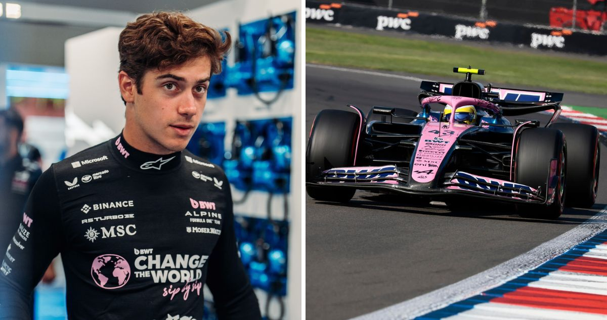
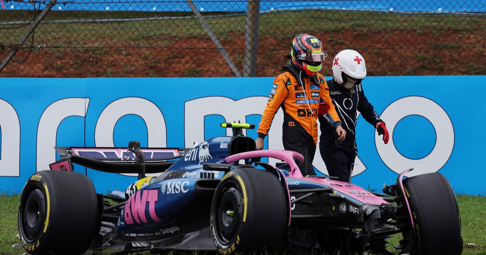

F1Motion
F1MotionEl piloto argentino finalizó en la 15ª posición en el Gran Premio de San Pablo, en Interlagos. Su compañero anotó un punto.
publicado por Tiago Monaco

Nuevamente sufrió con un Alpine poco competitivo y que, para colmo, debió cambiar en la mitad del fin de semana después del fuerte golpe en el sprint del sábado. Pero el trazado de Interlagos fue el lugar elegido por el equipo de Enstone para anunciar su continuidad para 2026 como titular. El resto fue bastante tortuoso y cerró la visita paulista con el 15º puesto en la competencia principal. Colapinto no la pasó bien con su A525 en ningún momento del fin de semana. El viernes sufrió en la clasificación para el sprint y el sábado se golpeó. Alpine decidió cambiar el chasis por los daños que había sufrido. Y, claro, con auto nuevo no tuvo tiempo para familiarizarse y así debió salir a la qualy, en la que no pudo pasar de Q1. Hasta que llegó la carrera del domingo. El argentino subió dos puestos antes de largar porque Esteban Ocon y Max Verstappen partieron desde boxes. Franco salió a pista con neumáticos medios y en la primera vuelta sufrió un extraño topetazo de Lewis Hamilton en plena recta. Raro para un piloto de la calidad del heptacampeón, una falla de cálculo insólito que no le generó una pinchadura de milagro al Alpine (el inglés fue sancionado con cinco segundos). Durante gran parte de la carrera, el argentino no tuvo buen ritmo, sufrió con el grip y la degradación. Pasó de las cubiertas medias a las blandas en la vuelta 30 y en su primer giro completo con las gomas rojas se quedó con el récord de vuelta (luego lo superarían). Pero fue apenas un oasis en el desierto, porque otra vez perdió ritmo. Su mejor stint fue el último: se detuvo en el giro 44 y volvió al compuesto medio. Ahí pudo mantener consistencia, pero la suerte estaba echada. Para Alpine, la visita a Brasil fue un bálsamo en medio de un año olvidable. Después de siete fines de semana en blanco, el equipo de Enstone volvió a sumar de la mano de Gasly, el único piloto que llevó agua para el molino francés en 2025. El de Normandía anotó dos unidades, una en el sprint y otra en la carrera principal y la escuálida suma del tema pasó a 22, pero sigue cómodamente en el último lugar y a 40 de Sauber, el noveno.
Franco Colapinto se estrelló en la carrera sprint del GP de Brasil
Volver atras